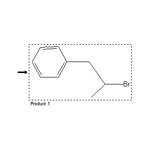

|  |
| FA | RX(1); FLST(1); RX(1) |
Reaction (1 of 1)
| Reaction ID | 7245872 |
| Product BRN | 2041553 |
| Product | (2-bromo-propyl)-benzene |
| No. of Reaction Details | 1 |
Reaction Details (1 of 1)
| Reaction Classification | Preparation (half reaction) |
| Citation Pointer | 4168514; Patent; Magerramow et al.; SU 394351; 1974; RZKHAR; Ref.Zh.Khim.; RU; 20; N29P; 1974;4206734; Journal; Edge; Kochi; JACSAT; J.Amer.Chem.Soc.; 95; 1973; 2635,2636;3957456; Journal; Kemura et al.; BCSJA8; Bull.Chem.Soc.Jpn.; 45; 1972; 860,862;4316754; Journal; Schachgel'diew; AZKZAU; Azerb.Khim.Zh.; 1; 1968; 40; Chem.Abstr.; 70; 11235; 1969;4367596; Journal; Sochvabbekowa et al.; AZKZAU; Azerb.Khim.Zh.; 2; 1973; 70; Chem.Abstr.; 80; 108083; 1974;4587490; Journal; Gossauer; Perez Ossorio; ARSQAL; An.R.Soc.Esp.Fis.Quim.Ser.B; 59; 1963; 185,188;4587493; Journal; Pines; Schappell; JOCEAH; J.Org.Chem.; 29; 1964; 1503,1507;4587579; Journal; Gamboa et al.; ARSQAL; An.R.Soc.Esp.Fis.Quim.Ser.B; 57; 1961; 607,612;4671163; Journal; Gelli et al.; ANCRAI; Ann.Chim.(Rome); 54; 1964; 1143,1146;4799415; Journal; Farkhadov et al.; DAZRA7; Dokl.Akad.Nauk Az.SSR; 29; 4; 1973; 18; Chem.Abstr.; 80; 108079y; |
Reference (1 of 11)
| Citation Number | 3957456 |
| Document Type | Journal |
| Authors | Kemura et al. |
| CODEN | BCSJA8 |
| Journal Title | Bull.Chem.Soc.Jpn. |
| (Series) Volume | 45 |
| Publication Year | 1972 |
| Page | 860,862 |
Reference (2 of 11)
| Citation Number | 4168514 |
| Document Type | Patent |
| Patent Author | Magerramow et al. |
| Patent Number | SU 394351 |
| Patent Year | 1974 |
| CODEN | RZKHAR |
| Journal Title | Ref.Zh.Khim. |
| Language Code | RU |
| (Series) Volume | 20 |
| Number | N29P |
| Publication Year | 1974 |
Reference (3 of 11)
| Citation Number | 4206734 |
| Document Type | Journal |
| Authors | Edge; Kochi |
| CODEN | JACSAT |
| Journal Title | J.Amer.Chem.Soc. |
| (Series) Volume | 95 |
| Publication Year | 1973 |
| Page | 2635,2636 |
Reference (4 of 11)
| Citation Number | 4316754 |
| Document Type | Journal |
| Authors | Schachgel'diew |
| CODEN | AZKZAU |
| Journal Title | Azerb.Khim.Zh. |
| Journal/Review Without CODEN | Chem.Abstr. |
| (Series) Volume | 1; 70 |
| Number | 11235 |
| Publication Year | 1968; 1969 |
| Page | 40 |
Reference (5 of 11)
| Citation Number | 4367596 |
| Document Type | Journal |
| Authors | Sochvabbekowa et al. |
| CODEN | AZKZAU |
| Journal Title | Azerb.Khim.Zh. |
| Journal/Review Without CODEN | Chem.Abstr. |
| (Series) Volume | 2; 80 |
| Number | 108083 |
| Publication Year | 1973; 1974 |
| Page | 70 |
Reference (6 of 11)
| Citation Number | 4587490 |
| Document Type | Journal |
| Authors | Gossauer; Perez Ossorio |
| CODEN | ARSQAL |
| Journal Title | An.R.Soc.Esp.Fis.Quim.Ser.B |
| (Series) Volume | 59 |
| Publication Year | 1963 |
| Page | 185,188 |
Reference (7 of 11)
| Citation Number | 4587493 |
| Document Type | Journal |
| Authors | Pines; Schappell |
| CODEN | JOCEAH |
| Journal Title | J.Org.Chem. |
| (Series) Volume | 29 |
| Publication Year | 1964 |
| Page | 1503,1507 |
Reference (8 of 11)
| Citation Number | 4587579 |
| Document Type | Journal |
| Authors | Gamboa et al. |
| CODEN | ARSQAL |
| Journal Title | An.R.Soc.Esp.Fis.Quim.Ser.B |
| (Series) Volume | 57 |
| Publication Year | 1961 |
| Page | 607,612 |
Reference (9 of 11)
| Citation Number | 4671163 |
| Document Type | Journal |
| Authors | Gelli et al. |
| CODEN | ANCRAI |
| Journal Title | Ann.Chim.(Rome) |
| (Series) Volume | 54 |
| Publication Year | 1964 |
| Page | 1143,1146 |
Reference (10 of 11)
| Citation Number | 4799415 |
| Document Type | Journal |
| Authors | Farkhadov et al. |
| CODEN | DAZRA7 |
| Journal Title | Dokl.Akad.Nauk Az.SSR |
| Journal/Review Without CODEN | Chem.Abstr. |
| (Series) Volume | 29; 80 |
| Number | 4; 108079y |
| Publication Year | 1973; 1974 |
| Page | 18 |
Reference (11 of 11)
| Citation Number | 5258383 |
| Document Type | Journal |
| Authors | Magerramow et al. |
| CODEN | UAKKAU |
| Journal Title | Uch.Zap.Azerb.Gos.Univ.Ser.Khim.Nauk |
| Journal/Review Without CODEN | Chem.Abstr. |
| (Series) Volume | 1; 81 |
| Number | 151674 |
| Publication Year | 1973 |
| Page | 49,50,51 |